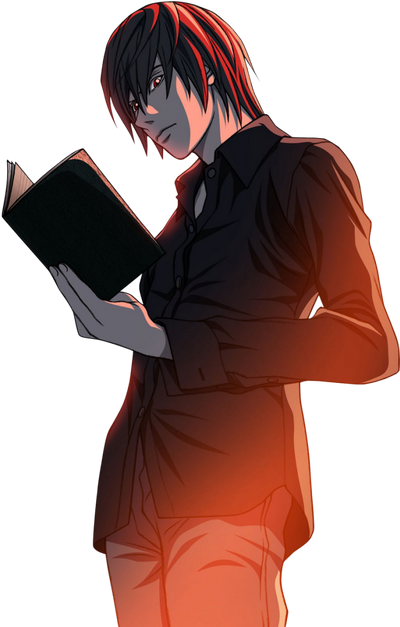
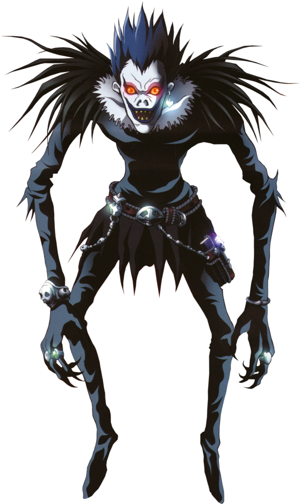

Always be updated for latest anime released or manga stories all news and updates you've ever need about animes
Join us and enjoy moments of twists , actions and entertainment
Death Note is a critically acclaimed manga series created by Tsugumi Ohba and illustrated by Takeshi Obata, first serialized in 2003. It explores profound themes of morality, justice, and the nature of good and evil, all wrapped in a thrilling cat-and-mouse game between its two central characters.
The story follows Light Yagami, a highly intelligent and disillusioned high school student who discovers a mysterious notebook called the Death Note. This notebook grants its user the power to kill anyone whose name they write in it, as long as they know the person's face. The Death Note originally belongs to Ryuk, a Shinigami (a death god) who drops it into the human world out of boredom. Light, who is frustrated by the world's injustices and rampant crime, sees the Death Note as a means to create a utopia free of evil, where he reigns as a god-like figure. He adopts the alias "Kira" and begins to execute criminals, gaining a following while simultaneously attracting the attention of law enforcement agencies worldwide. In response to Kira's actions, the enigmatic and brilliant detective known only as "L" steps in to apprehend him. What ensues is a high-stakes battle of wits, filled with psychological manipulation, deception, and moral ambiguity. As Light and L engage in a relentless pursuit, both characters reveal their complex motivations and ideologies, leading to intense confrontations and unexpected twists.
Light Yagami, The protagonist who begins as a gifted student but evolves into a complex antagonist driven by a desire for control and righteousness. His transformation is both compelling and tragic as he grapples with the consequences of his actions.
L, the reclusive detective whose intelligence rivals that of Light. L’s methods are unconventional, and his moral compass often clashes with Light’s. He serves as both a foil and a challenge to Light's ambitions.
L, the reclusive detective whose intelligence rivals that of Light. L’s methods are unconventional, and his moral compass often clashes with Light’s. He serves as both a foil and a challenge to Light's ambitions.
Misa Amane A devoted supporter of Kira who possesses her own Death Note. Her infatuation with Light complicates the narrative and adds layers to the themes of love, obsession, and sacrifice.
Near And Mello, Successors to L, they represent a new generation of detectives with their own strategies and ideologies. Their rivalry with Light adds further complexity to the story.
Death Note has had a profound impact on both manga and anime culture, spawning various adaptations, including an anime series, live-action films, and video games. Its exploration of philosophical questions and moral dilemmas resonates with audiences worldwide, making it a timeless piece of storytelling.
Overall, "Death Note" combines intricate plotting, psychological depth, and philosophical inquiry, creating a captivating narrative that challenges perceptions of justice and morality. Its characters and themes invite readers to engage in a deeper contemplation of life, death, and the choices we make in the pursuit of justice.